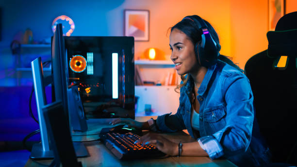

"The Sexism Problem of Overwatch & Gaming"


The video above (created by SVB on Youtube) talks about sexism in a game called Overwatch and gaming in general. The video mentions how toxicity is just a part of playing online games, however, the comments towards women generally tend to be much worse. They are extremely annoying and can make enjoying a hobby an uncomfortable experience.
Female Streamers
Over the last few years, there have been hundreds of female streamers/content creators climbing the ranks on the Twitch leaderboard. These women have taken their passion for gaming to the next level and created a sense of community amongst their followers. Below is a generator that will provide links to a handful of these streamers. You can click here for an updated list.